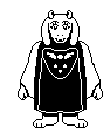
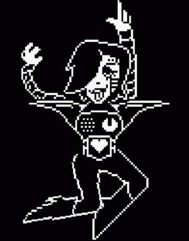
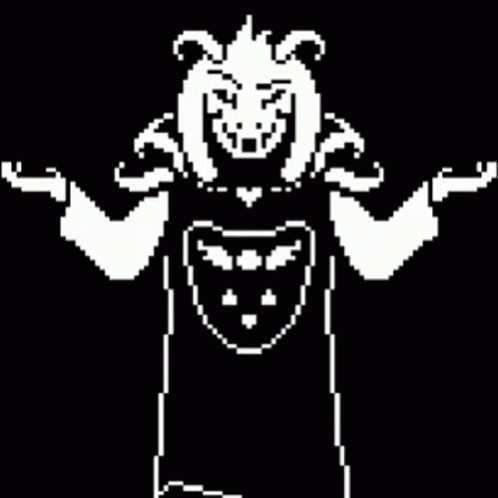

Toriel
Ela é gentil, maternal e tem uma personalidade protetora. Toriel é a primeira personagem que o
jogador encontra no jogo, após cair em um mundo subterrâneo habitado por monstros. Ela age como uma
guardiã das Ruínas, a primeira área do jogo, e está preocupada com a segurança do protagonista,
Frisk.
HISTORIA
Toriel costumava ser a rainha do subterrâneo, mas depois que os humanos selaram o mundo dos
monstros, ela se retirou para as Ruínas e viveu uma vida solitária. Ela se torna uma figura materna
para Frisk, tentando protegê-lo do perigo e ensinando-lhe sobre como sobreviver no subterrâneo. No
entanto, ela também é relutante em deixar Frisk sair das Ruínas, temendo o mundo exterior.
PERSONALIDADE
Toriel é conhecida por sua gentileza e amor maternal. Ela é protetora, muitas vezes cuidando de
Frisk e preocupando-se com seu bem-estar. No entanto, sua superproteção pode levá-la a tomar
decisões questionáveis, como impedir Frisk de sair das Ruínas. Ela também é uma personagem complexa,
que lida com a tristeza de ter perdido sua posição como rainha e a esperança de que um dia os
monstros possam viver em paz com os humanos.

Sans
Sans é um esqueleto baixo e, vestindo um capuz azul e calças curtas. Ele tem um sorriso perene
no rosto e é conhecido por seu olhar descontraído. Sans possui um sentido de humor único e gosta de
fazer piadas e trocadilhos constantemente, muitas vezes usando a fonte Comic Sans em seus diálogos.
No entanto, por trás de sua personalidade descontraída, Sans esconde segredos profundos.
HISTORIA
Sans é um dos habitantes do subterrâneo, uma terra onde os monstros foram selados após uma guerra
com os humanos. Ele é irmão de Papyrus, outro personagem notável do jogo. Sans trabalha como
sentinela em Snowdin, uma das áreas do subterrâneo. Embora pareça preguiçoso e desinteressado, ele
é, na verdade, um personagem extremamente poderoso e conhecedor dos acontecimentos do jogo.
PERSONALIDADE
Sans é uma personagem cativante de "Undertale", conhecida por sua personalidade única, sentido de
humor peculiar e papel importante na trama do jogo. Sua presença adiciona profundidade à narrativa e
desafia os jogadores a explorarem temas de moralidade e consequências de suas escolhas. Sans se
tornou uma figura icônica nos jogos indie e é amplamente apreciado pelos fãs da franquia.

Papyrus
Papyrus é um esqueleto alto e esguio, irmão mais novo de Sans. Ele veste-se com um traje vermelho
brilhante e luvas brancas. Papyrus é conhecido por seu entusiasmo inabalável e sua crença apaixonada
em sua própria grandeza. Ele geralmente mantém uma expressão alegre e confiante em seu rosto.
HISTORIA
Papyrus vive com Sans em Snowdin, uma das áreas do subterrâneo, e juntos eles formam a "Dupla
Esqueletal". A relação entre os dois irmãos é afetuosa, com Sans frequentemente fazendo piadas às
custas de Papyrus, mas também cuidando dele. Papyrus desempenha um papel significativo na rota
Pacifista do jogo, onde ajuda o jogador a entender o mundo dos monstros e suas aspirações.
PERSONALIDADE
Papyrus é um personagem otimista e ingênuo. Ele acredita que pode se tornar um membro da Guarda Real
e está constantemente tentando provar seu valor. Embora ele tenha boas intenções, suas tentativas
muitas vezes são engraçadas e exageradas, tornando-o uma fonte constante de comédia no jogo. Ele tem
um amor genuíno por puzzles elaborados e um desejo ardente de capturar um humano, apesar de ser um
dos personagens mais amigáveis do jogo.

Undyne
Undyne é uma peixe-mulher (fish-mermaid) do subterrâneo de "Undertale". Ela tem escamas azuis
brilhantes, cabelos verdes, olhos vermelhos intensos e é reconhecida por sua armadura e olho que
brilha em sua testa. Sua aparência feroz e sua personalidade determinada fazem dela uma figura
imponente e memorável no jogo.
HISTORIA
Undyne tem uma história de rivalidade amigável com Papyrus e é amiga próxima de Alphys, outra
personagem importante do jogo. Ela desempenha um papel crucial nas rotas de jogo Pacifista e
Genocídio, com seu comportamento e relacionamento com o jogador mudando drasticamente dependendo das
escolhas feitas pelo jogador.
PERSONALIDADE
Undyne é conhecida por sua natureza apaixonada e corajosa. Ela é a chefe da Guarda Real e está
comprometida com a proteção do subterrâneo e dos monstros a qualquer custo. Sua determinação e
lealdade aos seus amigos e ao rei Asgore são inabaláveis. Ela é uma personagem que valoriza a
justiça e a honra, e seu desejo de lutar contra os humanos é alimentado por sua crença de que isso
levará à libertação de seu povo.

Metatton
Mettaton é uma figura robótica carismática e extravagante em "Undertale". Ele tem um design
distinto, com um corpo metálico brilhante e uma tela que exibe várias expressões faciais e mensagens
durante todo o jogo. Mettaton é conhecido por seu visual exagerado, que combina um toque de glam
rock com um ar de celebridade.
HISTORIA
Mettaton é inicialmente introduzido como um apresentador de um concurso de perguntas e respostas
chamado "Quem Quer Ser um Milionário?", no qual ele é uma figura muito popular. No entanto, à medida
que a história progride, sua verdadeira natureza e importância na narrativa são reveladas. Mettaton
desempenha um papel vital em algumas das rotas do jogo, incluindo a Pacifista e a Neutra.
PERSONALIDADE
Mettaton é uma personalidade muito teatral e narcisista. Ele tem uma paixão pela fama e deseja ser
adorado e aplaudido por todos. Ele frequentemente quebra a quarta parede, direcionando sua atenção
para o jogador e fazendo piadas sobre sua própria existência como um personagem de videogame. Apesar
de seu egocentrismo, Mettaton tem momentos de humanidade e insegurança, o que o torna um personagem
complexo e envolvente.

Asgore
Asgore é um personagem imponente e majestoso em "Undertale". Ele é um monstro da raça dos bodes, com
chifres, pele peluda e uma barba longa e branca. Ele veste uma armadura real vermelha e carrega uma
tridente. Apesar de sua aparência assustadora, Asgore emana uma aura de dignidade e tristeza.
HISTORIA
Asgore é o rei do subterrâneo e, no passado, foi casado com Toriel, outra personagem importante do
jogo. Eles governaram juntos até que seus filhos, Asriel e Chara, enfrentaram tragédias, o que
causou uma divisão entre eles. Asgore se tornou o guardião da barreira que separa o subterrâneo do
mundo humano, uma barreira que ele acredita quebrar para que os monstros possam finalmente se
libertar.
PERSONALIDADE
Asgore é conhecido por sua gentileza e natureza pacífica. Ele é um governante amável e preocupa-se
profundamente com seu povo, os monstros, que estão selados no subterrâneo. Sua personalidade
calorosa e considerada contrasta com sua posição como rei e suas responsabilidades difíceis. No
entanto, ele carrega um fardo de tristeza devido às perdas e ao isolamento do subterrâneo.

Asriel
Asriel é uma figura única em "Undertale". Ele é um monstro da raça dos bodes, filho de Asgore e
Toriel Dreemurr. Asriel tem uma aparência adorável, com pelagem branca, chifres curtos e olhos
vermelhos gentis. Em sua forma original, ele é conhecido como "Asriel da Cidade" e parece uma
criança. No entanto, ele também pode se transformar em uma forma mais poderosa chamada "Asriel de
Deus da Hiper-Forma".
HISTORIA
A história de Asriel é intrinsecamente ligada à de sua família e ao subterrâneo. Ele cresceu no
palácio de seus pais, Asgore e Toriel Dreemurr, e era amigo próximo de uma criança humana chamada
Chara, que caiu no subterrâneo. A tragédia cercando a morte de Chara e a subsequente transformação
de Asriel em um ser poderoso e benevolente chamado "Fluxoey" são elementos essenciais da narrativa
PERSONALIDADE
Asriel é conhecido por sua gentileza, empatia e amor por seus amigos e familiares. Ele é
inicialmente retratado como uma criança inocente e carinhosa, com uma personalidade afável. No
entanto, após enfrentar tragédias e eventos traumáticos, ele lida com conflitos internos e um
profundo senso de culpa.
Flowey
Flowey é uma criatura estranha e única que lembra uma flor dourada com rosto. Ele não tem uma
expressão facial fixa, mas pode exibir uma variedade de emoções em sua face. No entanto, sua
aparência inocente esconde uma natureza profundamente perturbada.
HISTORIA
Flowey é, na verdade, a primeira forma de vida que o protagonista, Frisk, encontra no subterrâneo.
Ele é resultado de uma experiência de Alphys, uma cientista monstra, que tentou dar vida a uma flor
usando uma substância chamada "Determination". No entanto, a experiência deu errado, e Flowey nasceu
sem uma alma, tornando-se um ser cruel e sem moral.
PERSONALIDADE
Inicialmente, Flowey se apresenta como amigável e útil, mas sua personalidade é rapidamente revelada
como manipuladora e sádica. Ele é conhecido por seu desejo de poder e sua falta de empatia pelos
outros. Sua falta de alma o torna incapaz de sentir emoções genuínas, o que o leva a buscar formas
de preencher o vazio em sua existência.